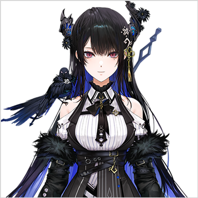

[The Demon of Sound]
Nerissa Ravencroft
With a deep love of song, Nerissa Ravencroft is “The Demon of Sound.”
Her powerful love turned into a dark power that inhabited her singing, giving her music
the potential to drive the entire world mad. The gods, fearful of her beautiful voice,
decided to seal her away for eternity, but this did not seal away her desire to sing for
others. While she was sealed away, she came across Japanese otaku culture, and is
currently fascinated by idol songs and penlights. Maybe her life imprisoned wasn’t all that bad.
Watch them here: